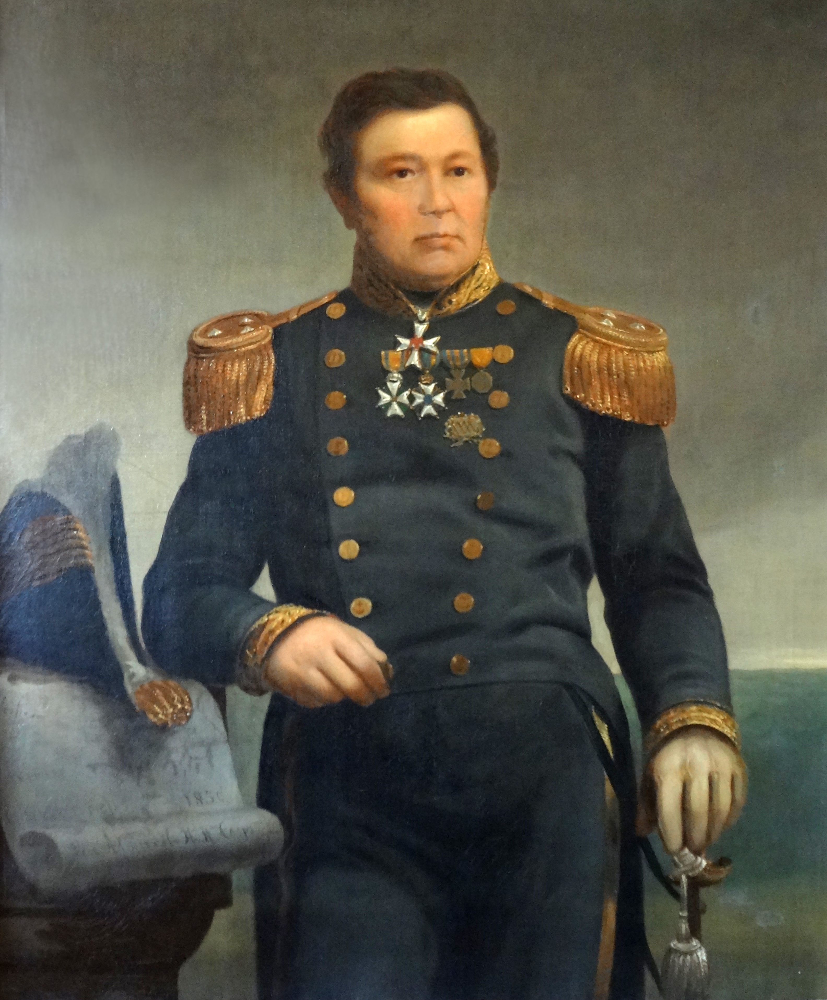
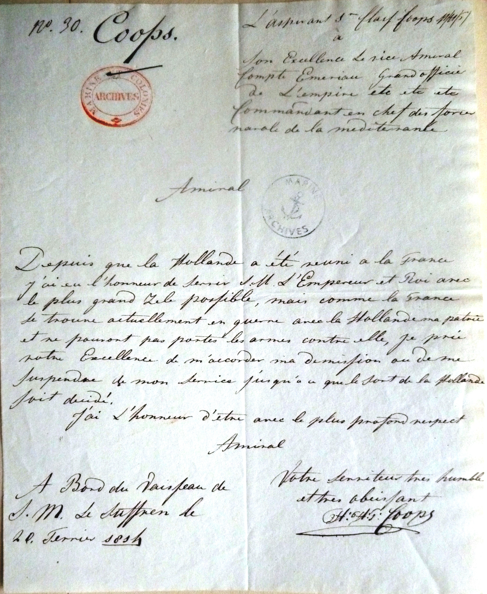
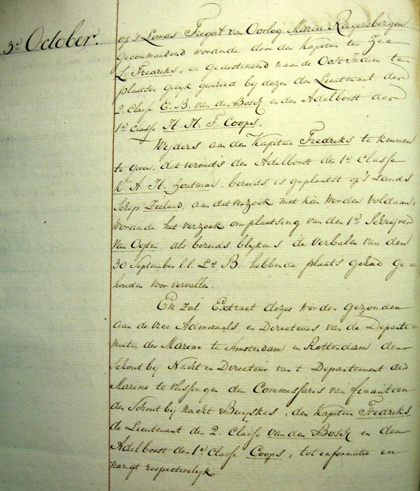
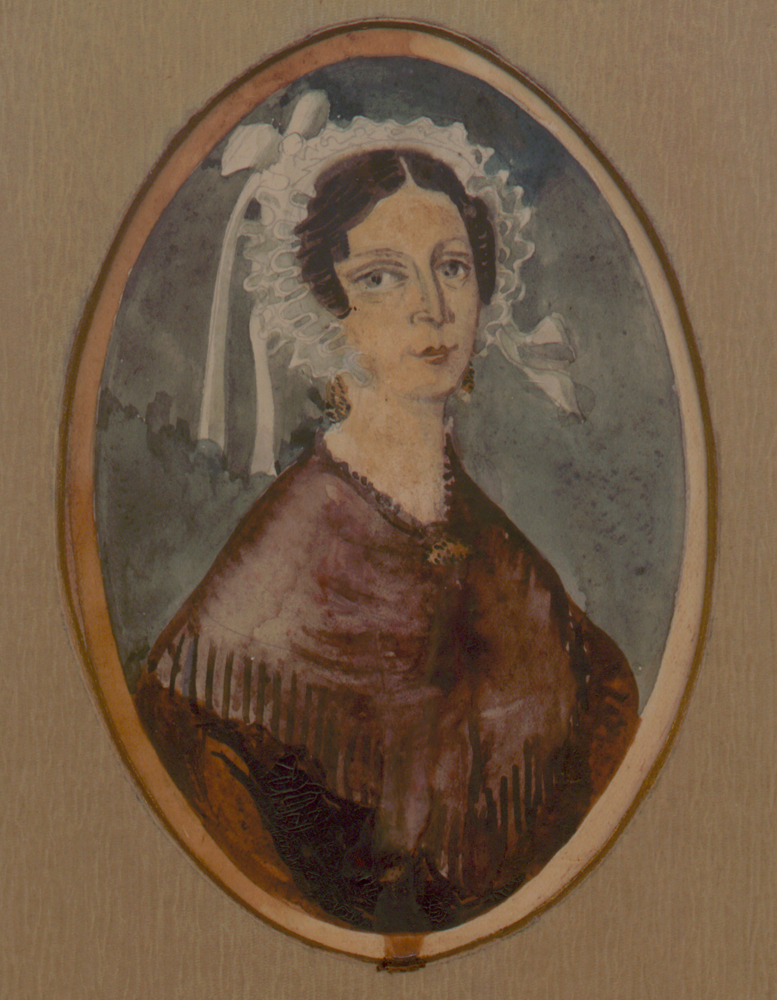
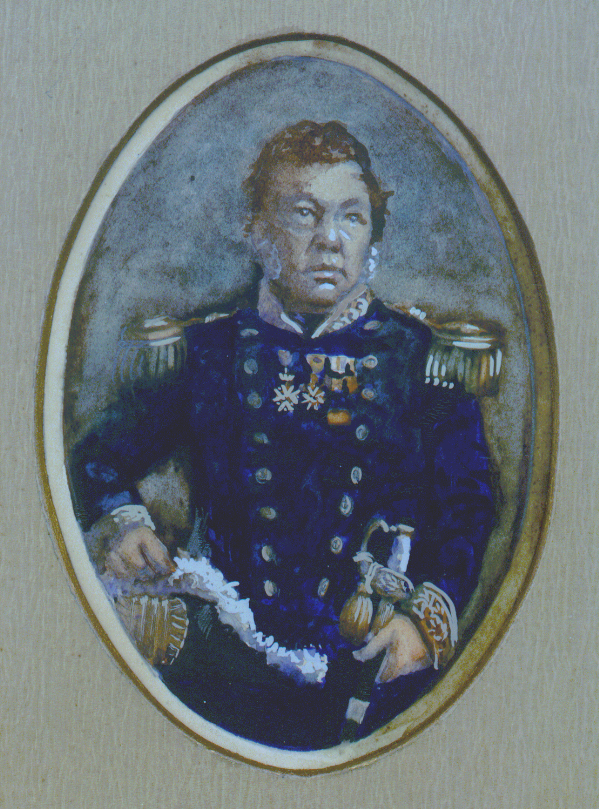
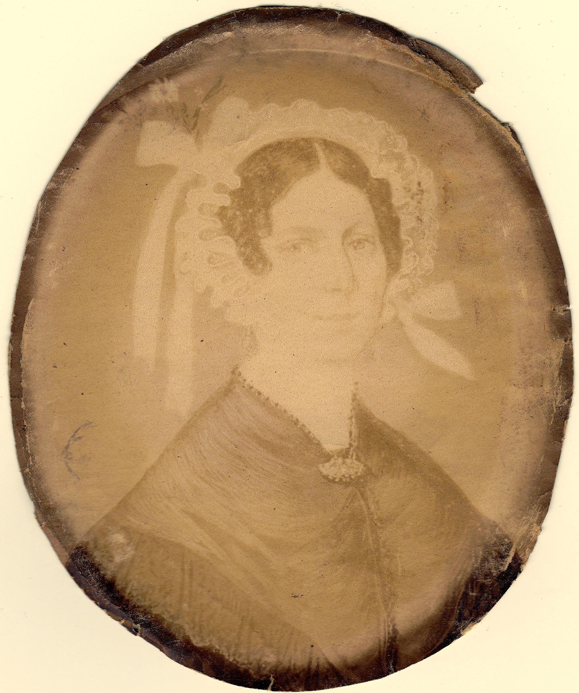
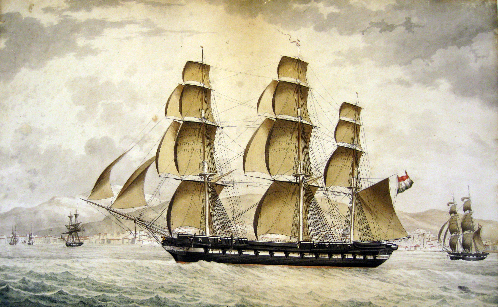
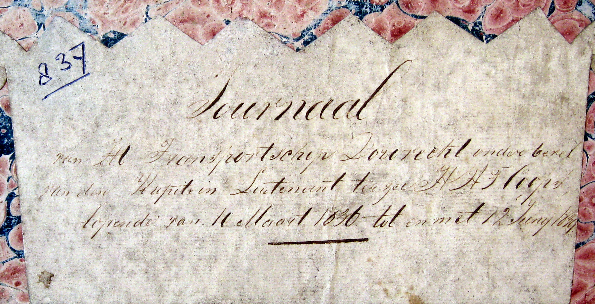
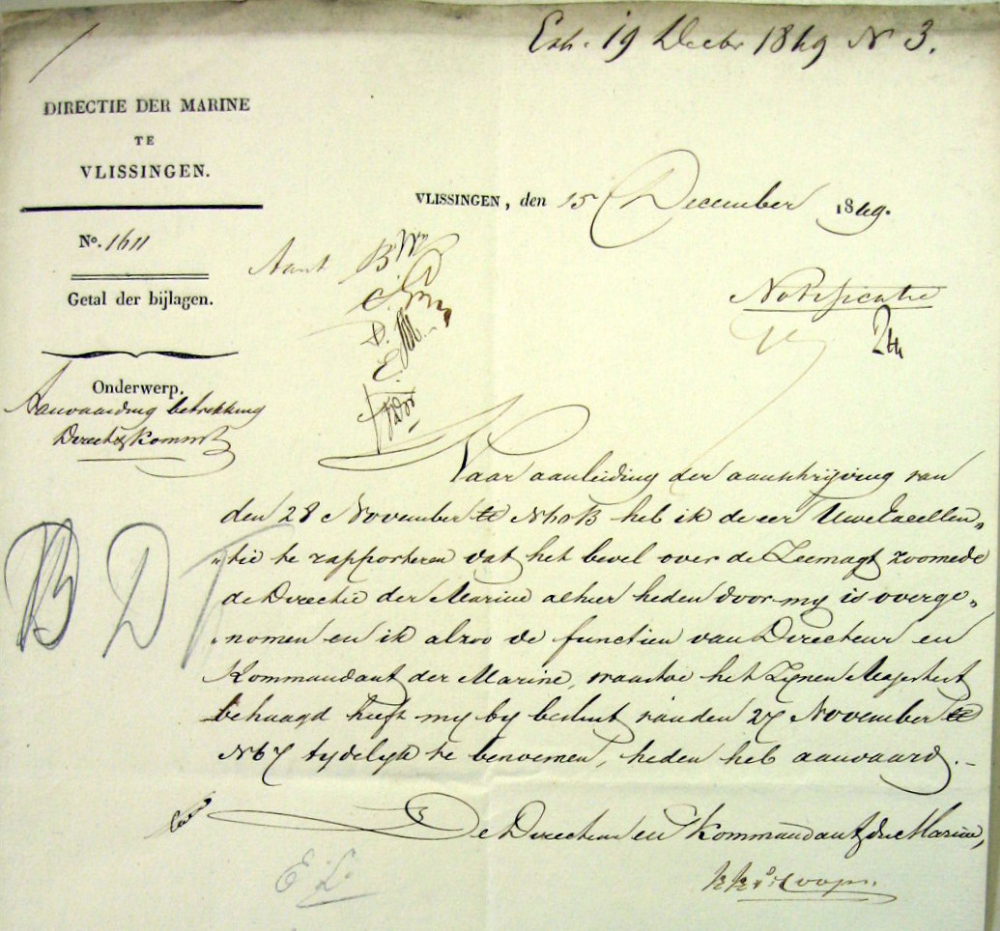
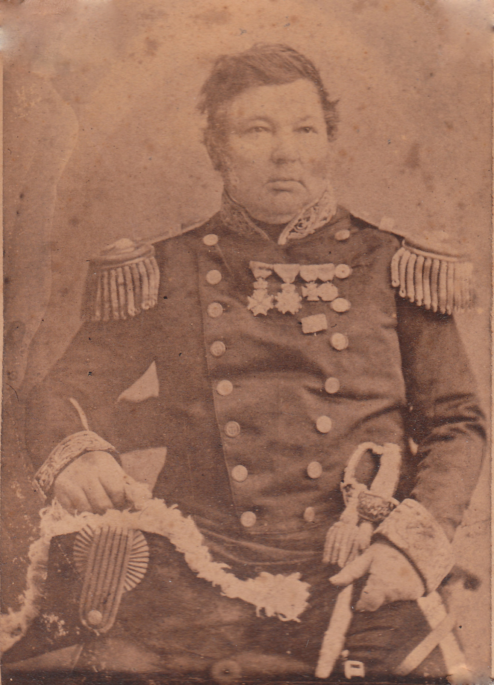

Biografie · Koninklijke Marine
Herman Hendrik Timotheus Coops
Van marinecadet tot titulair viceadmiraal, 1793–1865
Timotheus diende in de Franse en Nederlandse marine. Zijn loopbaan voerde van Toulon via de Molukken, Java en West-Indië naar Nagasaki. Hij sloot zijn actieve dienst af als directeur en commandant van de marinebasis in Vlissingen.
‹ Alle biografieën en historische artikelen
01 / Franse en Nederlandse dienst
Van Feijenoord naar Toulon
Herman Hendrik Timotheus Coops werd op 12 augustus 1793 in Doetinchem geboren. Op 3 augustus 1807 trad hij als cadet-élève toe tot het marine-instituut op Feijenoord. Na de inlijving van Nederland bij Frankrijk diende hij in de Franse marine. Toen Frankrijk en zijn vaderland tegenover elkaar kwamen te staan, vroeg hij in Toulon om ontslag. Hij en andere Nederlandse officieren werden enige tijd vastgehouden in fort Lamalgue. [1]


Per 1 juli 1814 trad Coops als adelborst eerste klasse in dienst van de Koninklijke Nederlandse Zeemacht. In november werd hij luitenant-ter-zee tweede klasse. Op 29 oktober 1815 vertrok hij aan boord van het fregat Maria Reigersbergen naar Nederlands-Indië, waar de Nederlanders het bestuur in verschillende gebieden van de Britten overnamen. [2]


02 / Molukken, Sumatra en Java
In dienst van het Nederlandse koloniale gezag
In 1817 nam Coops deel aan Nederlandse militaire operaties tegen de opstand op de Molukken, onder meer bij Fort Duurstede op Saparoea en Fort Loehoe op Ceram. Hij werd op 3 juli 1820 benoemd tot ridder vierde klasse in de Militaire Willems-Orde. [1]
In oktober 1820 vertrok hij op de Dageraad naar Nederlands-Indië. Tijdens de tweede expeditie tegen Palembang op Sumatra bracht hij in 1821 de gevangengenomen sultan naar Batavia. Als eerste officier op de Javaan diende hij van augustus 1825 tot februari 1826 bij de landingsdivisie in Semarang. Voor zijn dienst tijdens de Java-oorlog ontving hij de Medaille Java. [1]
03 / Gezin
Gerharda Mechtelina en Harmina
Op 19 september 1823 trouwde Timotheus in Stad-Doetinchem met zijn nicht Gerharda Mechtelina Coops, dochter van Willem D.Jzn. Coops en Johanna Maria Evekink. Gerharda was op 22 april 1798 in Doetinchem gedoopt. Hun dochter Harmina werd op 23 oktober 1823 geboren. Het bevolkingsregister van 1830 vermeldt het gezin aan de Homburgerstraat 42. Gerharda overleed op 8 mei 1850 in Vlissingen en had haar echtgenoot en dochter als erfgenamen aangewezen. [3]






04 / Levant en West-Indië
Van Smyrna naar Paramaribo
In 1827 vertrok Coops als eerste officier van de Javaan naar de Middellandse Zee, waar hij in de Levantdivisie bij Smyrna diende. Tijdens de Belgische Opstand diende hij in de derde maritieme linie op de Schelde. Daarvoor ontving hij het Metalen Kruis. Later voerde hij het bevel over een divisie kanonneerboten in Hellevoetsluis. [1]


Het journaal van de Dordrecht documenteert ten minste drie reizen onder zijn bevel naar West-Indië. In 1837 voer hij via Curaçao naar Paramaribo. In 1838 reisde de Surinaamse gouverneur-generaal Van Heeckeren met het schip naar Curaçao, waar hij kort na aankomst overleed. Zijn weduwe reisde met de Dordrecht terug naar Nederland. [2]


05 / Japan
Met de Palembang naar Nagasaki
Van 1842 tot 1845 voerde Coops het bevel over het fregat Palembang. In 1844 bracht hij een brief van koning Willem II naar Nagasaki. De onderhandelingen en de overhandiging van de brief staan beschreven in Een Japans avontuur. In 1846 werd hij benoemd tot ridder in de Orde van de Nederlandse Leeuw. [1]
06 / Vlissingen en pensioen
Directeur en commandant van de marinebasis
Na terugkeer werd Coops commandant van de zeemacht in de monden van de Maas en Goedereede. Op 1 december 1849 werd hij directeur en commandant van de marinebasis in Vlissingen. In 1850 werd hij schout-bij-nacht. Eind maart 1853 ging zijn eervol ontslag uit de functie in. Hij ging met pensioen met de rang van titulair viceadmiraal. [4]


Voor hulp bij de reparatie van het Pruisische fregat Gefion kreeg Coops in 1853 de Orde van de Rode Adelaar tweede klasse. De Pruisische oorkonde noemt hem directeur en commandant van de Nederlandse marine. [1]
Lees de Duitse tekst uit de eerdere biografie
Wir Friedrich Wilhelm,
von Gottes Gnaden König von Preuben,
haben den Contra-Admiral, Direktor und Kommandant der Königlich-Niederländischen Marine, Herman Wendrik Timotheus Coops, den rothen Adler Orden zweiter klasse verliehen, und erteilen dem selben über den rechtmäbigen Besitz dieser auszeichnung das gegenwärtige Beglaübigungs Schreiben mit Unserer eigenen Unterschrift und beigedrucktem Königlichen Insiegel.
Charlottenburg de 31, März 1853
Coops droeg ook het onderscheidingsteken XXXV voor 35 jaar dienst. In mei 1865 ontving hij het Ereteken 1813–1815. Hij overleed op 24 juli 1865 in Stad-Doetinchem. [3]


Verantwoording
Bronnen en beeldmateriaal
- W.J.C. Coops, Op koers naar Nagasaki. 45 jaar marinedienst van Herman Hendrik Timotheus Coops (1793–1865), De Bataafsche Leeuw, 2015. Manuscript, bijschriften en themadossiers in het familiearchief. Zie ook Vierhonderd jaar molenaars.
- Nationaal Archief, Ministerie van Marine, Scheepsjournalen, toegang 2.12.03, inv. 3655 (Maria Reigersbergen) en 1157 (Dordrecht).
- Nederland’s Patriciaat, 1947 en 1983. Familiearchief Coops, persoonlijke stukken, bevolkingsregister, memorie van aangifte na het overlijden van Gerharda en stukken over onderscheidingen.
- Zeeuws Archief, toegang 95, Marine-Etablissement Vlissingen. Nationaal Archief, Ministerie van Marine, toegang 2.12.01.